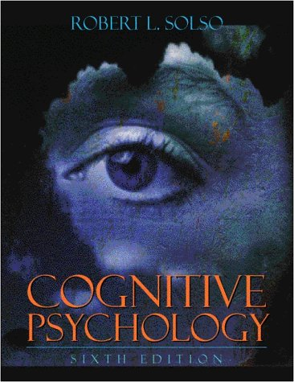

|
|
PSYCHOLOGY
Subject
Guide to Library Resources
|
|
This
guide was created to assist in locating available information
with an emphasis on psychology at the Long Beach City College
Library and through the Internet.
Psychology
is the study of behavior in man and animals. Scientific method
is used to study, compare and observe individuals and groups to
gather information. Psychology has many sub-disciplines some of
which include:
|
comparative
psychology--studies animal behaviors across species
biopsychology--studies
physical influences on behavior, branches include neuroscience,
physiological psychology, and psychopharmacology
cognitive,
developmental and social psychology--emphasis is on learning,
how new learning is obtained and maintained, and how social
situations influence behavior; studies cognition, social
behavior, memory, emotion and the integration of these
processes
clinical
psychology--emphasis is on working with individuals and
groups to improve behavior; branches include neuropsychology,
child clinical psychology, health psychology, community
psychology, and psychopathology
industrial/organizational
psychology--studies human behavior and interactions at
a work setting
|
The brain
|
|
Rat and Maze
|
GETTING
STARTED WITH RESEARCH
A good place to start a paper is to read a little general literature
about the field (encyclopedia, internet article) and look up
basic terms that are unfamiliar to you. Dictionaries or encyclopedias
can be found in the reference area of the library which specifically
deal with the areas of psychology.
The Encyclopedia Britannica can also be found online. |
The
next step would be to look for books which cover or touch upon
your specific topic. Use the chapter headings and indexes of books
that seem relevant to zero in on your topic.
Finally,
look for journal articles focused on your specific area of inquiry
for more in-depth and recent coverage.
Always
remember to analyze the appropriateness of the research methods
and conclusions of the articles and books you read, the accuracy,
approach and bias that the material may contain. Learn to be critical
and alert with the sources you use.
When
unable to find answers to your research questions in these resources,
the internet and reference books will often give you new leads
to the answers. Finally, don't forget the wealth of information
contained in videos.
Reference
tools, guides, encyclopedias, dictionaries, biographical encyclopedias,
etc., are generally found in a designated Reference Area where
many people can refer to this general information. Items found
in Reference Areas cannot be checked out of the library. Occasionally,
however, older copies of Reference items can be found in the
circulating collection, or stacks, which can be checked out
of the library.
To find articles and books on psychology and related fields,
the main printed index to use for extensive research on a given
topic is:
Social
sciences index.
Location: LAC Index Table (Reference Room) Call
Number: AI3 .S62
(Previous volumes known as Social Sciences & Humanities
Index, Call
Number: AI3 .R49)
Psychology
materials can be found in the Reference Room Collections at
LAC and PCC with LC call numbers beginning with BF or RC. The
items below are available for consultation but not for check
out: |
Psychotherapy Session
|
Oxford
companion to the mind. 1987.
Location: LAC Reference Room Collection Call Number: BF31
.O94 1987
Location: PCC Book Shelves Call Number: BF31 .O94 1987
International
dictionary of psychology. 1989.
Location: LAC Book Shelves Call Number: BF31 .S83 1989
Dictionary of personality and social psychology.1986.
Location: LAC Reference Room Collection Call Number: BF698
.D527 1986
Psychology today. The Psychology today
omnibook of personal development. 1977.
Location: LAC Reference Room Collection Call Number: BF637.S8
M34
Dictionary of behavioral science.[1973]
Location:
LAC Book Shelves Call Number: BF31 .W64 1973
Location: PCC Reference Room Collection Call Number: BF31
.W64 1973
Dictionary
of general psychology: basic terminology and key concepts.
[1970]
Location: LAC Reference Room Collection Call Number: BF31
.H427
Handbook
of psychological terms 1965.
Location: LAC Reference Room Collection Call Number: BF31
.H33 1965
Location: PCC Book Shelves Call Number: BF31 .H33 1965
Encyclopedia
of human behavior : psychology, psychiatry, and mental health.
1970.
Location: LAC Book Shelves Call Number: BF31 .G
Location: PCC Reference Room Collection Call Number: BF31
.G6
Dictionary
of dream symbols : with an introduction to dream psychology.
1993.
Location: LAC Reference Room Collection Call Number: BF175.5.D74
A25 1993
Dictionary
of psychology. 1999.
Location: LAC Reference Room Collection Call Number: BF31
.C72 1999
Biographical
dictionary of psychology. 1997.
Location: LAC Biography Reference (Reference Room) Call
Number: BF109.A1 B56 1997
International
dictionary of psychology. 1996.
Location: LAC Reference Room Collection Call Number: BF31
.S83 1996
Biographical
dictionary of psychology. 1984.
Location: LAC Biography Reference Call Number: BF109.A1
Z85 1984
Student's
dictionary of psychology. 1992.
Location: LAC Reference Room Collection Call Number: BF31
.S69 1993
Penguin
dictionary of psychology. 1985
Location: PCC Book Shelves Call Number: BF31 .R43 1985
Location: PCC Book Shelves Call Number: BF31 .R43 1985
Location: PCC Reference Room Collection Call Number: BF31
.R43 1985
International
encyclopedia of psychiatry, psychology, psychoanalysis &
neurology. 1983-
Location: LAC Reference Room Collection Call Number: RC334
.I573
Dictionary
of behavioral science. 1989.
Location: LAC Reference Room Collection Call Number: BF31
.D48 1989
Location: PCC Reference Room Collection Call Number: BF31
.D48 1989
|

Cognitive
Psychology text
Magazine
cover
Layers
of consciousness?
|
TERMS
TO USE TO SEARCH FOR MATERIALS
|
The
terms below may help you in selecting a topic to do your
research on. These
terms will also be helpful when searching for psychology
materials in printed indexes, in the online catalog, in
online databases, or on the internet.
|
"The eye sees only what
the mind is prepared to comprehend" |
Ability.
Adjustment (Psychology)
Adolescent psychology.
Aggressiveness (Psychology)
Animal psychology.
Apperception.
Assertiveness (Psychology)
Attention.
Attitude (Psychology)
Behavior genetics.
Behaviorism (Psychology)
Belief and doubt.
Change (Psychology)
Child psychology.
Choice (Psychology)
Clinical psychology.
Cognition.
Communication in psychology.
Concepts.
Consciousness.
Control (Psychology)
Criminal psychology.
Deprivation (Psychology)
Developmental psychology.
Difference (Psychology)
Dissociation (Psychology)
Drawing, Psychology of.
Educational psychology.
Ego (Psychology)
Eidetic imagery.
Emotions.
Environmental psychology.
Ethnopsychology.
Excitation (Physiology)
Experience. |
Feminist psychology
Fighting (Psychology)
Genetic psychology.
Gestalt psychology.
Habit.
Hostility (Psychology)
Human behavior.
Humanistic psychology.
Ideology.
Imagination.
Individuality.
Influence (Psychology)
Information theory in psychology.
Inhibition.
Instinct.
Intellect.
Interest (Psychology)
Intuition (Psychology)
Judgment.
Knowledge, Theory of.
Left and right (Psychology)
Logic.
Loss (Psychology)
Maturation (Psychology)
Meaning (Psychology)
Memory.
Mental health.
Motivation (Psychology)
New Thought.
Number concept.
Observation (Psychology)
Operant behavior.
Opposition, Theory of.
Oppression (Psychology) |
Parapsychology.
Passivity (Psychology)
Perception.
Personality.
Phenomenological psychology.
Phrenology.
Physiognomy.
Polarity (Psychology)
Political psychology.
Population psychology.
Prediction (Psychology)
Problem solving.
Psychoanalysis.
Psychobiology.
Psycholinguistics.
Psychology, Applied.
Racism in psychology.
Reasoning (Psychology)
Self-acceptance.
Social adjustment.
Social interaction.
Social psychology.
Spatial behavior.
Stress (Psychology)
Subconsciousness.
Symbolism (Psychology)
Temperament.
Thought and thinking.
Threat (Psychology)
Typology (Psychology)
Values.
Will.
|
FIND
BOOKS IN THE CATALOG
Rorschach Inkblot Test |
Books
can be located by using a subject or keyword search in Voyager,
the Library's online catalog.
Try
using the terms
listed above to find books on particular
psychology subject areas, using either keyword or subject
searches. Try
a keyword search and look at the subject headings assigned
to some of your hits, then link to those subject headings
for more records. If you don't find records in the LBCC
Library for what you need, try searching online
databases for articles and search other
libraries for books. You may use Interlibrary
Loan to request books not found at
LBCC.
To find
Electronic
books in Voyager
which can be read online from home, try a search using general
terms and adding a Quick Limit of E-Books. You will need
to view the record for the book to click on the link to
the website that hosts the book. To view from home you will
need passwords which can be found with the passwords for
online databases available from the librarians.
|
FIND
BOOKS ON THE SHELVES
You
can also browse the shelves by the Library of Congress Classification
letters assigned to books in the following subject areas, remembering
that not all of these call numbers will be represented on the shelves,
and that some relevant books will be found in other areas as well:
Find
books with these call numbers on Stack Level 1, Sub-basement of
LAC:
BF1-990
Psychology
BF38-64 Philosophy. Relation to other topics
BF173-175.5 Psychoanalysis
BF176-176.5 Psychological tests and testing
BF180-198.7 Experimental psychology
BF203 Gestalt psychology
BF207-209 Psychotropic drugs and other substances
BF231-299 Sensation. Aesthesiology
BF309-499 Consciousness. Cognition
Including learning, attention, comprehension, memory,
imagination, genius, intelligence, thought and
thinking, psycholinguistics, mental fatigue
BF501-505 Motivation
BF511-593 Affection. Feeling. Emotion
BF608-635 Will. Volition. Choice. Control
BF636-637 Applied psychology
BF638-648 New Thought. Menticulture, etc.
BF660-685 Comparative psychology. Animal and human psychology
BF692-692.5 Psychology of sex. Sexual behavior
BF697-697.5 Differential psychology. Individuality. Self
BF698-698.9 Personality
BF699-711 Genetic psychology
BF712-724.85 Developmental psychology
Including infant psychology, child psychology, adolescence,
adulthood
BF725-727 Class psychology
BF795-839 Temperament. Character
BF839.8-885 Physiognomy. Phrenology
BF889-905 Graphology. Study of handwriting
BF908-940 The hand. Palmistry
BF1001-1389 Parapsychology
BF1001-1045 Psychic research. Psychology of the conscious
BF1048-1108 Hallucinations. Sleep. Dreaming. Visions
BF1111-1156 Hypnotism. Suggestion. Mesmerism. Subliminal projection
BF1161-1171 Telepathy. Mind reading. Thought transference
BF1228-1389 Spiritualism
Including mediumship, spirit messages, clairvoyance
BF1404-1999 Occult sciences
BF1444-1486 Ghosts. Apparitions. Hauntings
BF1501-1562 Demonology. Satanism. Possession
BF1562.5-1584 Witchcraft
BF1585-1623 Magic. Hermetics. Necromancy
BF1651-1729 Astrology
BF1745-1779 Oracles. Sibyls. Divinations
BF1783-1815 Seers. Prophets. Prophecies
BF1845-1891 Fortune-telling |
Notes:
"Just plain nuts"
Door sign:
"Child Psychologist"
|
Find
books with these call numbers on Stack Level 5, 2nd (top) floor
of LAC:
RC321-571 Neurosciences. Biological
psychiatry. Neuropsychiatry
RC346-429 Neurology. Diseases of the nervous system
Including speech disorders
RC435-571 Psychiatry
RC475-489 Therapeutics. Psychotherapy
RC490-499 Hypnotism and hypnosis. Suggestion therapy
RC500-510 Psychoanalysis
RC512-569.5 Psychopathology
RC512-528 Psychoses
RC530-552 Neuroses
RC554-569.5 Personality disorders. Behavior problems
Including sexual problems, drug abuse,
suicide, child abuse |
Forgot
to return the book on amnesia to the library
|
FIND
VIDEOS
|
Some
videos may be found on Voyager.
First select a Quick Limit of Videorecordings,
then do a keyword search on the term psychology.
You
may also view videos inhouse from the Instructional
Media Collection. There are about 90 videos
available on the subject of psychology that can be
viewed in the library when they are not being used for a
course.
|
Sigmund Freud, father of psychoanalysis |
FIND
ARTICLES
|
Magazine cover
|
Periodical
titles available through the library and containing psychology
articles can be found on the periodicals shelves alphabetically
by title. Additional titles will be found online using ProQuest.
LBCC holdings for psychology journals include the following:
|
American Behavioral Scientist
American Journal of Psychiatry
American Journal of Psychoanalysis
American Journal of Psychology
Annual Review of Psychology
Child Development
Children Today
Counseling Psychologist
Educational and Psychological Measurement
Environment & Behavior
Generations
Human Relations
Journal of Abnormal Psychology
|
Journal of Applied Behavioral Science
Journal of Conflict Resolution
Journal of Counseling and Development
Journal of Educational Psychology Journal of General Psychology
Journal of Health and Social Behavior
Journal of Social Psychology
Personnel Journal
Psychological Bulletin
Psychological Review
Psychology Today
Social Psychology Quarterly
YC Young Children |
Do you see
both images? |
The
Library has a subscription to several online
databases containing psychological material or information.
These databases are particularly helpful in finding information
as many journals can be searched simultaneously by the keywords
you select. The full-text is then most often available online
for printing or sending to your email account. Some of these databases
include:
Biography
Resource Center
Encyclopaedia Britannica
Health Reference Center--Academic
Health & Wellness Resource Center
Opposting Viewpoints
ProQuest
Only
current faculty, students or staff may use these databases. Ask
for passwords at the Reference Desk at either Library. The Librarians
can instruct you on using these article databases. There is a
free
workshop offered for learning the ins and outs
of online database searching.
FIND
INTERNET RESOURCES
| Many
good resources can be found on the Internet for current research,
basic information, and indexes to more resources.
To do
a general search for information you could start with Google
or Yahoo
search engines and use some of the terms
listed above. Remember that you will also come
across many sites produced by school classes and others that
will not carry the authority you might be looking for. So
review the origin of the information carefully.
A few
good sites for psychology information and links include:
|
|
WRITING/RESEARCH
ASSISTANCE
Ivan Petrovich Pavlov
and reflex conditioning experiments with dogs |
Finally,
while you are writing your paper, there is an online subject
guide, Writing
Tips, with links to online help for organizing and formulating
your paper, and finding online dictionaries and citation tools.
There is also a Writing Center at both campuses to help you
with the fundamentals of your paper, for information call
the Writing Center at LAC (562)
938-4520 and at PCC: (562)
938-3991.
|
|
Increase Your Research Skills!
Enroll for Lib1 (Information
Resources 1-credit)
or Lib3 (Information Competency 3-credits)
|
|

{kind=link}
 Library
Homepage
Library
Homepage